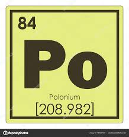
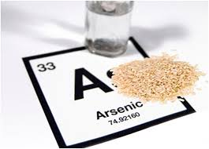
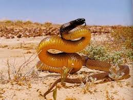
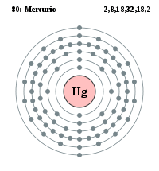

Para saber si una sustancia es mortal o no, se usa la dosis mortal media; esto quiere decir que si cierta sustancia mata a más de la mitad de seres esta va a ser considerarda mortal. Por ejemplo, se aplica un veneno en 100 ratones;si más de 50 ratones mueren, esta sustancia va a ser considerada mortal Para saber que tan letal es una sustancia (después de ser catalogada como mortal) se determina cuantos gramos de esta sustancia son necesarios para matar a cierto orgamismo con cierta masa(kg)
Las 5 sustancias más letales del mundo son:Debemos decir que las propiedades de esta sustancia en sí misma no la hacen tóxica, como sí sucede con el mercurio o el arsénico. Lo que realmente mata en este elemento es su poder radiactivo (aquel que mató a la propia Curie). Cuando el polonio interactúa con el cuerpo animal, emite una radiación que destruye las células y afecta el ADN. El tiempo de vida restante para un organismo afectado es de un mes desde que ingiere el material.
El arsénico es la sustancia con más fama como veneno para deshacerse de un animal, incluyendo al ser humano. Ciertamente, tiene una toxicidad del orden de los 13 miligramos por kilogramo; sin embargo, no es este aspecto el que la hace más peligrosa, sino la posibilidad de exposición a ella que hay.
Esta sustancia contiene una combinación de muchas proteínas altamente tóxicas, de hecho su indicador de toxicidad es de 1 miligramo por kilogramo, pero una propiedad que distingue a las serpientes es la velocidad con la que inoculan su veneno, de modo que una serpiente puede tener una sustancia menos tóxica que otra y ser más rápida, al morder el poder de acción de dicho químico es mayor.La serpiente con el veneno más letal es la Taipan de interior
El mercurio en su estado puro no es tan tóxico como pudieramos suponer, la cuestión es que se le encuentra por lo general combinado y entonces aumenta su poder destructivo. Especialmente venenoso es el mercurio orgánico, cuyos indicadores de toxicidad son de entre 1-100 mg/kg.
La botulina es una sustancia que segregan las bacterias que viven en alimentos podridos, responsables de la enfermedad del botulismo. La toxina botulínica es probablemente la sustancia más venenosa del mundo, basta usar cinco nanogramos por kilogramo. Sus efectos son sobre el sistema nervioso, digamos solamente que en cantidades no letales puede dejar inactivo un ratón durante un mes. Lo interesante de esta sustancia es que sus principios activos suelen escoger determinadas células del cuerpo, del mismo modo que afecta a algunos animales y a otros no. El hombre lamentablemente se encuentra en esta lista. Cuesta creer, por cierto, que algunos de sus compuestos se emplean en la industria cosmética, desde luego, no son tóxicos.